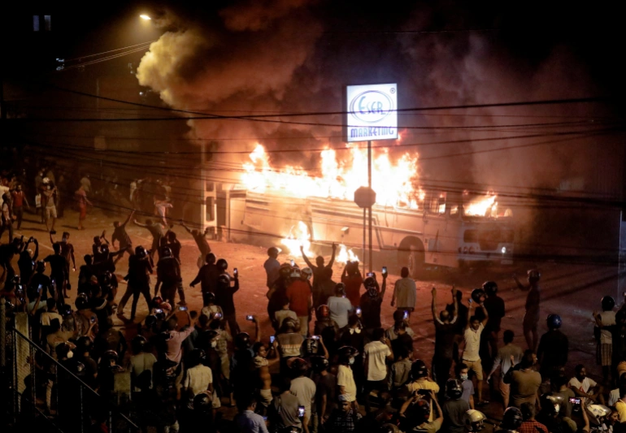
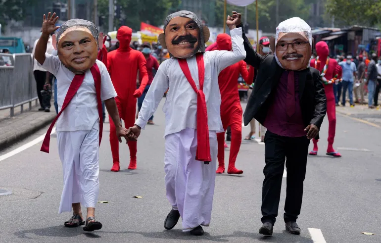
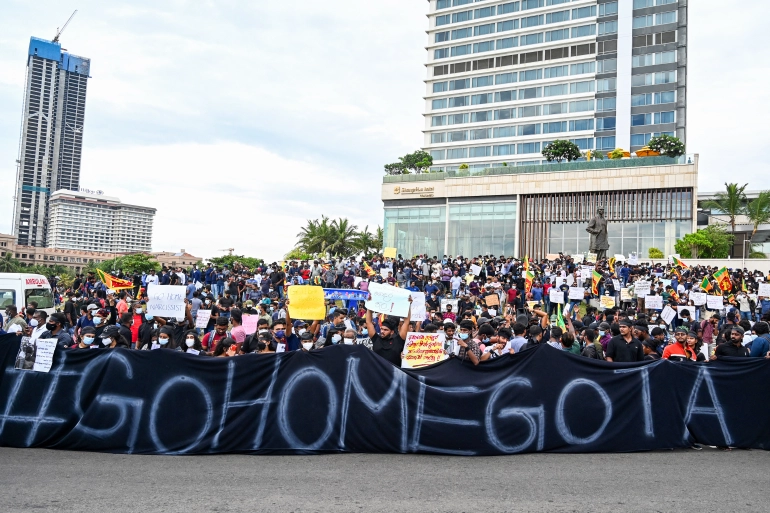
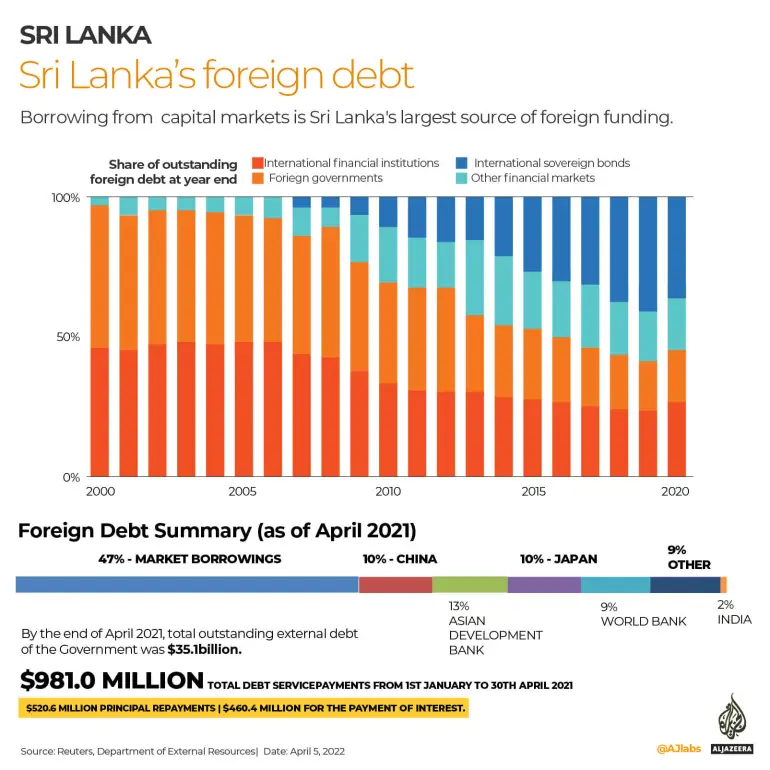

Wednesday 13rd April 2022
oll
A look at how the crisis in the island nation has unfolded in the past two weeks.

Muslim demonstrators eat Iftar meal inside a protest area, dubbed the Gota-Go village,
where people are gathering in opposition to Sri Lanka's President Gotabaya Rajapaksa near the Presidential Secretariat in Colombo [Dinuka Liyanawatte/Reuters]
Sri Lanka, which is mired in a deep political and economic crisis, has announced it is suspending payments on its $51bn foreign debt.
The island nation of 22 million people is experiencing acute shortages of food, fuel and other essentials, a crisis that has inflicted widespread misery in the worst downturn since independence from the United Kingdom in 1948.
The South Asian country emerged from a devastating civil war in 2009, only to be rocked by Easter Sunday church bombings in 2019 before being hit hard the following year by the COVID-19 pandemic, which torpedoed its vital tourism sector.
Here is how the crisis has unfolded in recent days:
March 31: President’s home threatened
Hundreds of protesters, rallied by unidentified social media activists, try to storm the home of President Gotabaya Rajapaksa, demanding his resignation.
Police fire tear gas and water cannon, and at least one man is critically injured. The capital is placed under curfew.

Protesters set fire to a bus parked at the road leading to President Gotabaya Rajapaksa’s residence as the crisis-hit country faced up to 13-hour electricity cuts [File: Dinuka Liyanawatte/Reuters]
April 1: State of emergency
As protests spread, Rajapaksa declares a state of emergency, giving security forces sweeping powers to arrest and detain suspects.
April 2: Troops deployed, curfew
Sri Lanka declares a 36-hour nationwide curfew and deploys troops.
The order takes effect at dusk and was to be lifted on the morning of April 4, police say – a period that covers planned mass anti-government protests.
April 3: Cabinet resigns
The government briefly blocks access to social media before the ban is lifted following a ruling by the country’s Human Rights Council.
Almost all of Sri Lanka’s cabinet resigns at a late-night meeting, leaving Rajapaksa and his brother Mahinda, the prime minister, isolated.
April 4: More resignations
Rajapaksa offers to share power with the opposition under a unity administration which he would lead along with his brother Mahinda. He is rebuffed.
Trading is halted on Sri Lanka’s stock exchange.
The governor of the central bank, having resisted calls to seek a bailout from the International Monetary Fund (IMF), announces his resignation.

Protesters dressed as President Gotabaya Rajapaksa, right, and his brothers, ex-finance minister Basil, left, and Prime Minister Mahinda walk during a protest in Colombo, Sri Lanka [File: Eranga Jayawardena/AP]
April 5: President loses majority
Rajapaksa’s problems deepen as Finance Minister Ali Sabry resigns just a day after he was appointed.
The embattled president loses his parliamentary majority as former allies urge him to quit. He lifts the state of emergency.
April 7: Debt restructure plea
Rajapaksa appoints an expert panel to organise a debt restructure as ratings agencies warn of a looming default.
April 8: Record rate hike
The country’s central bank hikes interest rates by a record 700 basis points in a bid to halt the free fall of the Sri Lankan rupee, which has plunged more than 35 percent in a month.
April 9: Biggest street protest
Tens of thousands march on the beleaguered president’s office in the biggest protest to date, demanding for Rajapaksa to resign.

Protesters take part in a demonstration in the capital Colombo on April 9, 2022 [Ishara S Kodikara/AFP]
April 10: Medicine shortages
Sri Lanka’s doctors say they are nearly out of life-saving medicines, warning that the crisis could end up killing more than the coronavirus pandemic.
April 11: PM plea for patience
Prime Minister Mahinda Rajapaksa pleads for “patience” amid renewed mass protests.
April 12: External debt default
The country announces it is defaulting on its entire external debt of $51bn as a “last resort” after running out of foreign exchange to import desperately needed goods.
A finance ministry statement pledges “fair and equitable treatment of all creditors” ahead of an IMF-assisted recovery programme.

(Al Jazeera)
SOURCE: NEWS AGENCIES